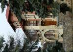
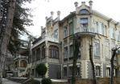
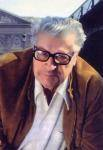
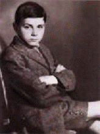

Страницы авторов "Тёмного леса"
Пишите нам! temnyjles@narod.ru
1 ноября 1911 года в Москве в богатейшей купеческой семье Тарасовых Аслана Александровича и Лидии Васильевны родился мальчик. Ему дали имя Леон, Лев. Вероятно, это имя определило и характер, и талант ребёнка, и его жизненный путь. Имя Лев Тарасов сегодня мало знакомо, но второе имя этого человека - Анри Труайя - принадлежит выдающемуся французскому писателю, широко известному всему читающему миру. "Мне кажется, что я дерево, корни которого русские, а плоды французские", - скажет о себе писатель. В канун столетия со дня рождения Анри Труайя перелистаем его автобиографическую книгу "Моя столь длинная дорога", коснёмся событий XIX века, освоения Россией Северо-Западного Кавказа, переживём вместе с Тарасовыми потрясения революции и гражданской войны, горечь разлуки с Отечеством, согреемся теплом их надежд на счастливое будущее детей на новой Родине, испытаем гордость за признание таланта нашего земляка, нашего соотечественника, ещё раз ощутим историю русских корней и вкус французских плодов.
"Я русский армянин, воспринявший только русскую культуру", - будучи маститым писателем заявляет Анри Труайя. В семейной хронике Тарасовых есть все основания для такого утверждения.
Ещё в XIV веке, полагает одна из исторических версий, в горах Кавказа оказался отряд армянских воинов, посланный византийским императором Василием Вторым охранять границу Византии, находящуюся на территории современной Болгарии. Но по каким-то причинам этот отряд воинов не дошёл до указанного места и вынужден был остановиться в горах Западного Кавказа и расселиться среди адыгов. Армяне - христиане, как главный духовный стержень свою веру они сохранят в тяжелейших условиях, а родной язык им сохранить не удастся. Пришельцы станут налаживать необходимые связи с горцами и вынуждены будут освоить их язык, который постепенно вытеснит из употребления армянский. Армяне, вероятно, привнесли новый жизненный уклад в сообщество; обмениваясь хозяйственным опытом, были затронуты и культурные богатства пришельцев и аборигенов, со временем произошло взаимное обогащение их культур: в частности, армяне посвящают горцев в христианское мировоззрение. Процесс этот займёт немало времени: с XIV-XV вв. по XIX век. Полного растворения, ассимиляции пришельцев в среде горцев не произойдет, они составят отдельную этническую группу. Этих людей станут называть черкесогаями. Вероятно, армяне обладали более высокими культурой и знаниями, чем горские племена, и поэтому заняли привилегированное место в сообществе. Черкесогаи займутся скотоводством, ремеслом, меновой торговлей. К концу XVIII века в среде горцев мусульманскими проповедниками будет усиленно насаждаться новая религия. Мусульманство на фоне языческих представлений горцами будет воспринято. Христиане черкесогаи, понимая своё сложное положение в сообществе, где агрессивно стало преобладать мусульманство, опасаясь за чистоту своей веры, а порою и за свою жизнь, примут предложение русских военных властей выйти из гор, поселиться на равнине, в месте, предложенном властями: у слияния рек Уруп и Кубани и принять российское подданство. Исход из гор Западного Кавказа христианского населения черкесогаев будет отмечен в военных документах в 1833 году, позже этот процесс активизируется, и в1839 году население нового аула будет состоять из четырёхсот армянских семей. Командующий Кубанской линией генерал Г.Х. фон Засс, Главный пристав закубанских народов майор Венеровский и пристав закубанских армян хорунжий Атарщиков 2-й продумали до мелочей и осуществили все необходимые мероприятия по переселению и обустройству черкесогаев на новом месте. Русской военной власти надо было налаживать отношения с аборигенами при освоении новых территорий. Мудрый политический шаг - взять под свою защиту христианское население - принес возможность устроить столь необходимый России форпост своего влияния в этой части Кавказа. Единая христианская вера русских и черкесогаев объединила, зародила взаимную симпатию, что проявилось в принятии российского подданства и русификации фамилий горских армян.
Фамилия Тарасовы появится совершенно случайно. При переселении на равнину горских армян переписывали, а фамилий у них не было. Из имени старшего в роду русский чиновник образовывал фамилию. Торос - звали старейшего в этой семье, и отсюда фамилия - Тарасов.
Русской администрации черкесогаи будут оказывать всяческие услуги: они станут посредниками между горцами и русской властью, переводчиками, а подчас и лазутчиками-осведомителями. Этим горские армяне завоюют расположение русских к себе. К 1839 году образуется аул Армавир. При поддержке русской власти и военной силы новый аул будет очень быстро развиваться. Удобное географическое положение, тесные обменно-торговые связи между жителями аула и горцами, огромные пустующие земли, на которых с успехом можно заниматься землепашеством и скотоводством, а позже и железная дорога - послужат причиной быстрого обогащения большей части населения аула.
Тарасовы займут видное положение в Армавире, сосредоточив в своих руках значительные капиталы. Коммерческая деятельность Тарасовых будет разнообразна. Начальный капитал сложится из небольшой прибыли от продажи мануфактуры. В 1841 году Тарасовы построят лавку, в которой будут торговать почти 40 лет. В этих заботах посильное участие принимали и дети. Постепенно торговля набирает объёмы, Тарасовы переходят к более крупным коммерческим сделкам. Патриарх рода Тарасовых (Торос-Аслан) пользовался в Армавире особым уважением, слыл как порядочный и честный человек. В 1855 году его избирают армавирским почётным судьёй. После его смерти (1857г.) наследники расширили сферу деятельности. Они открыли торговое отделение в Екатеринодаре, и помимо основного занятия коммерцией, занялись разведением лошадей, овец и другого скота, что тоже имело немаловажное значение в их хозяйственной деятельности. Скот, а особенно лошадей, продавали не только в своем Отечестве, но и на внешних рынках, где товар пользовался высоким спросом. В 1858 году семейство Тарасовых во главе с матерью Марией Сеферовной приписалось к сословию купцов Нахичевани- на-Дону, а через двадцать лет - к купечеству Екатеринодара. Здесь купцы Тарасовы стали играть видную роль в экономическом развитии главного города Кубани. К началу XX века Тарасовы были монополистами в мануфактурной торговле, на долю которых приходилась основная часть оборотов и прибыли.
В 1875 году в Армавире заработала фабрика по производству ваты, которая ещё больше расширила сферу деятельности купцов. В 1880 году братья Тарасовы объединились в товарищество "Торговый дом братьев Тарасовых". Несмотря на выделение капиталов одного из братьев - Ованеса - в отдельный торговый дом "Иван Тарасов с сыном", торговля успешно развивалась. Открылись отделения в Ставрополе, Симферополе и Астрахани.
Чтобы иметь представление о купеческой деятельности Тарасовых обратимся к описанию торгового дома в Ставрополе. "Мануфактурных лавок и магазинов в Ставрополе набиралось не один десяток. Среди наиболее известных был магазин братьев Тарасовых на Николаевском проспекте, который официально именовался "Товариществом мануфактур братьев Тарасовых". Само здание, которое и сегодня по-своему не ординарно, было построено в 1896 году архитектором Бржезицким. Во вновь возведенном здании обрусевший армянин Александр Асланович Тарасов с братьями, больше проживавшими в Москве, решил устроить самый современный мануфактурный магазин, который своими товарами удовлетворил бы потребность не только обеспеченной городской публики, но и предместий города, и жителей сёл и станиц Ставропольской губернии. Именно через своих торговых агентов, колесивших по губернии, и надеялись братья найти широкий рынок сбыта товаров, производимых не только в России. Вся необходимая материя для одежды простолюдинов была на складах "Товарищества", как и для более "почетной публики". Здесь можно было купить и готовые швейные изделия, а также шляпы, фуражки. Торговля процветала, что позволило в усадьбе дома возвести новые строения для швейного производства." Такое описание торговой деятельности Тарасовых составлено Беликовым и Савенко.
По большей части дома Тарасовых в разных городах построены по проектам талантливых архитекторов и сегодня являются архитектурными украшениями.
В 1900году торговый дом братьев Тарасовых с Высочайшего соизволения был преобразован в "Товарищество мануфактур братьев Тарасовых" с капиталом в три миллиона рублей! Никому из армавирских армян-купцов не удалось добиться подобного успеха. Считая, что все возможности коммерческого развития на Северном Кавказе исчерпаны, Тарасовы перебираются в Москву - крупнейший центр купечества России. "И на них сказалась тяга в Москву, то стремление, которое заставляло именитых купцов и Сибири, и Украины, и Волги, и Кавказа, достигнув имущественного благополучия, переселяться в первопрестольную столицу", - пишет П.А. Бурышкин, ссылаясь на знатока купеческой генеалогии И.И. Щукина. Тарасовы, приписавшись к купечеству Москвы, быстро освоились в новом для них обществе и завоевали прочный авторитет. Отец Анри Труайя Аслан Александрович входил в состав Совета Обществ оптовых товариществ мануфактур. Жена его, Лидия Васильевна, была одной из городских дам-патронесс. Коммерческая деятельность требует участия в разных экономических проектах, в Армавире в1912 году открывается Северо-Кавказский банк для субсидирования строительства железной дороги Армавир - Туапсе. Тарасов становится одним из учредителей этого банка, а позже - управляющим Армавиро-Туапсинской дороги. Этот период развития экономики России можно представлять всплеском грандиозных проектов, высочайших достижений во всех отраслях хозяйства. Капиталы вкладываются не только в те планы, что принесут скорую выгоду, но идёт задел и долгосрочных.
Купцы Тарасовы вновь обращают свои интересы к Кисловодску. Ещё в 1894 году дед писателя приобретает недалеко от источника Нарзан значительный участок земли под застройку. Обратившись к услугам молодого талантливого архитектора Э.Б. Ходжаева, Александр Асланович со своими младшими братьями Лазарем, Гавриилом и Михалом становятся обладателями одной из самых красивых и удобных дач на берегу Ольховки. Вскоре рядом с первым сооружением появится ещё один архитектурный шедевр. Двухэтажное кирпичное здание на каменном цоколе выполнено в стиле зарождающегося модерна с готическими мотивами, который создает впечатление изящной монументальности. Перед дачей заложен сосновый парк, который в скором времени одарит обитателей этого дома своим волшебным запахом и шёпотом запутавшегося в их ветвях легкого кисловодского ветерка. В то время здесь отдыхали семьи Тарасовых и их многочисленные гости, а теперь располагаются корпуса санатория "Жемчужина Кавказа". В память о владельцах и архитекторе на одном из зданий есть памятная доска.
Пришедшая в Кисловодск железная дорога в 1893 году вызывает на курорте строительный бум. Под строительство частных дач, предназначенных для гостей курорта, отводятся земельные участки в районе вокзала, по Ребровой балке. В 1912 году Аслан Александрович Тарасов, отец писателя, по проекту теперь уже известного архитектора Э.Б. Ходжаева осуществляет строительство дачи для своей семьи, которую назовут "Карс". (Дача по имени древней армянской крепости. Карс - крепость, центр в X-XI вв. армянского Карсского царства. В XIX веке в ходе русско-турецких войн крепость не раз брали штурмом русские у турков и до 1917 года она была в составе России.)
В самом начале Каскадной лестницы Кисловодского парка, слева, если подниматься, в глубине за столетними деревьями просматривается великолепное сооружение из красного кирпича с огромным арочным балконом. Это и есть та самая крепость, которая примет своих владельцев в тревожное время 1919 года.
А пока все идет на подъём. В семье Тарасовых прибавление, родился мальчик, ему выбирают имя Лев - Леон. Это имя на черкесском звучит как Аслан, мальчик назван именем отца. Его ждёт удивительная жизнь. Мальчик подрастает в большой семье: у него брат и сестра. Образованием и воспитанием ребёнка занимается мама Лидия Васильевна и гувернантка, которая будто предвидя будущее учила Льва французскому языку, много рассказывала о Франции, о Париже. "Я полюбил Францию задолго до того, как узнал её",- вспоминает писатель.
Однако безмятежную счастливую жизнь раскололи политические перемены. Начинается Первая мировая война, затем перевороты, революция, хаос, беззаконие. Постоянное напряжение, страх за жизнь делают невозможным дальнейшее пребывание богатейшей семьи Тарасовых в Москве. Благосостояние семьи обеспечивал немалый капитал, которого в одночасье лишились Тарасовы. Так же, как и капитала, в одночасье можно было лишиться и жизни.
Бежать, бежать, подальше от этого ужаса. Тогда казалось, произошедшее не может стать реальностью на долгое время, надо только где-то переждать беспорядки. Лидия Васильевна второпях собирает детей, зашивая в подкладку детских пальто драгоценности, выправляет документы и собирается в Харьков к Аслану Александровичу. На этом пути судьба Тарасовым приготовила множество испытаний. "О! Это было захватывающее бегство через всю Россию!" - время загладит ужас и страдания этого побега, а горечь пережитого Анри Труайя выразит через много лет в книге "Моя столь длинная дорога".
1919 год. Казалось, половина России сорвалась с насиженных мест и, гонимая революционным ветром, помчалась по необъятным просторам. Хаос, голод, ужас, неразбериха, беззаконие. В вагоны врывались шайки разбойников, пассажиров обыскивали, отбирали продукты, искали драгоценности, стреляли в людей. В поездах чувствовалась всеобщая враждебность, от этого становилось ещё страшнее. Случившийся в вагоне пожар от загоревшейся соломы едва не стоил жизни Тарасовым, чудом они спасаются. Далее "переход через линию фронта, охраняемую красными, ночное бегство на телеге, патруль прусских уланов, при свете луны преградивший нам путь, и, наконец, прибытие в немецкий карантинный лагерь, где все мы заболели испанкой. Лёжа на жалких койках, отгоняя руками сновавших между соломенными тюфяками крыс, мы боролись с голодом, истощением, с лихорадкой. Лекарств не было, - вспоминает писатель. - Крестьянка, нанятая немцами для чёрной работы, раздобыла моей матери водку: по её словам лучшее средство от заразы. Может быть, действительно алкоголь спас тогда всех нас". С трудом добираются после выздоровления в Харьков, где теперь отец берёт все заботы о семье на себя. Проследить весь путь Тарасовых детально не удается, нет свидетельств. "В голове какая-то неразбериха из вёрст и городов", - признаётся Труайя. Из Царицына (Волгоград) семья перебирается в Ялту, оттуда в Новороссийск. Из Новороссийска Тарасовы поездом отправляются в Кисловодск, где была у них дача "Карс".
Надо представить, с каким облегчением и надеждой они вздохнут, закрыв за собою двери своего кисловодского дома. Теперь, казалось, все тревожное позади. "Горный воздух, прекрасный парк, покрытые снегом вершины гор на горизонте, курортники, которые прогуливались по аллеям, пили минеральную воду, а по вечерам собирались в ресторанах. Все гостиницы и дачи были переполнены семьями, жаждавшими забыть о пережитом ужасе", - вспоминает писатель. После тревог, опасностей, перенесённых в столице и по дороге на Кавказ, это великолепие природы и спокойствие размеренной курортной жизни представлялись незыблемыми. Обманчивость таких представлений в мае 1919 года ещё не чувствовалась. Курорт веселился, публика проводила время возле источника, на балах, на концертах, на пикниках. Несмотря на продолжение Первой мировой войны, затем последовавшим переворотам: февральскому и октябрьскому, гражданской войне - в Кисловодске жизнь шла своим чередом, казалось, что Кисловодск обойдут все политические невзгоды. Сюда, словно в мирный оазис, в 17-19 годах прошлого века прибывают господа из высшего света, надеясь спрятаться от тревог, пережить неприятности, дождаться возвращения прежнего режима.
Самому младшему из Тарасовых - Льву - было тогда восемь лет, он наблюдал за всем, что происходило, многого не понимая по малолетству, но от этого не пропадало восхищение, очарование кисловодским миром. "Из слов взрослых выходило, - вспоминает Анри Труайя, - что в гражданской войне вот-вот произойдет перелом, и к Рождеству 1919 года мы вернемся в Москву. Но на город, опровергая оптимистические прогнозы, надвигалась гроза. Теперь шептались о том, что верные царю войска отступали, положение на Кавказе и на Кубани ухудшилось и нужно искать новое место спасения." Здесь, в Кисловодске, Тарасовы проведут восемь месяцев, а потом снова дорога, бесконечно тревожная дорога из родного дома, из родного Отечества...
Из родного Отечества - навсегда.
Но тогда никто не знал, что навсегда. Пройдет много-много лет, оказавшись далеко от России, Анри Труайя будет возвращаться к смутным воспоминаниям детства. Конкретные детали этих детских впечатлений сотрутся, в памяти нагромоздятся события более весомые, но глубоко-глубоко в сердце будет жить необъяснимое тепло родной земли, которое объединит пережитое и вымышленное, которое станет называться грёзами.
Дальнейший путь эмигрантов Тарасовых лежал из Новороссийска через Константинополь, Венецию во Францию, в Париж. Однако в столице жизнь оказалась очень дорогой. Аслан Александрович хлопотал о тех денежных средствах, что были вложены в банки Франции, Англии и Соединенных Штатов, но бесполезно. Англия и Франция отказались платить, а США выплатили лишь малую часть. Отец несколько раз попытался заняться привычным ему делом - торговлей, но купеческое счастье от него отвернулось. Семья жила трудно, а те драгоценности, что ухитрились вывезти, таяли с каждым днем: за них очень мало платили. Тарасовы на грани отчаяния покидают через некоторое время Париж, доверясь слухам о дешёвой жизни в Висбадене, перебираются туда. Эта часть Германии по условиям перемирия 1918 года была оккупирована Францией. Но и здесь жизнь окажется трудной, Аслан Александрович примет решение вернуться в Париж.
Между тем, время шло, дети подрастали, получали образование, привыкали к новой жизни, привыкали к обретенной родине. Дочь Тарасовых Ольга закончила курсы классического танца, получила приглашение в русскую театральную труппу. Ольга будет приносить немного денег, и это поможет семье выпутываться из затруднений. Старший сын Александр увлекся точными науками. Он надолго уехал учиться. Получив электротехническое образование, со временем, он станет крупным специалистом в области телекоммуникаций и сделает блестящую карьеру. Александр со своей семьей будет жить в Париже.
Воспринявший русские образы, бережно хранимые родителями, Лев с удовольствием вживался во французскую жизнь, обзаводился друзьями-французами, получал французское образование, наконец, французское гражданство. В зависимости от обстоятельств, мальчик чувствует себя то французом, то русским. "В лицее, в окружении товарищей, говоря с ними на их языке, играя в их игры, я чувствовал себя французом. И все-таки, стоило мне хоть немного отвлечься, я ощущал между ними и собой неуловимую разницу. ...придя домой, покидал Францию и переселялся в Россию. Полдня я жил в Париже, полдня в Москве. Долгое время я так и двигался вперед, хромая: одна нога на твердой французской земле, другая на русских облаках".
Склонность к литературному творчеству в десятилетнем мальчике заметил учитель французской словесности. Лев описал события побега семьи из России. Вдохновленный поддержкой преподавателя, Лев много работает, самостоятельно продолжает литературные опыты. Так появляется большой рассказ "Тень". Друзья Тарасова Мишель Моруа и Жан Боссан, оба очень увлеченные литературой, одобряют рассказ и показывают его отцу Мишель - Андре Моруа. Писатель тогда находился в зените своей славы, и получить его одобрение значило многое. Через некоторое время в "Еженедельном обозрении" рассказ был опубликован. Автору тогда исполнилось девятнадцать лет, только что сдан экзамен на бакалавра философии. Шел 1930 год.
Но финансовые проблемы семьи решены не были. "Наше безденежье граничило с нищетой", - сетует Лев. Он принимает решение продолжить образование в юридическом направлении, что в будущем, через три года, даст возможность поступить на государственную службу и обеспечить постоянный доход семье. "Я мог поступить на службу в государственный аппарат, только приняв французское подданство",- понимает молодой человек. Французское гражданство он получит в 1933 году.
В это же время начинается работа над первым романом "Обманчивый свет". "Я писал эту книгу с маниакальным пылом", - вспоминает писатель. Книгу готовили к публикации в издательстве "Плон", был подписан договор с автором, но и поставлено издателем условие: "настоятельно необходим псевдоним". Издатель считал, что переводная книга не будет пользоваться должным спросом. В тяжелых исканиях родилась новая фамилия - Труайя, в которой первая буква сохранилась от прежней. Но издатель требовал для благозвучности изменить и имя. "Ну, тогда Анри". "Прошло много времени, прежде чем я обратился с просьбой официально изменить моё имя и фамилию. Теперь я по документам - Анри Труайя, но Лев Тарасов по- прежнему живет во мне: сжавшись в комочек, он сладко спит в самых потаенных глубинах моей души". Далее следует служба в армии, во время которой словно "гром среди ясного неба" - присуждена премия популистского романа за "Обманчивый свет". Писателю Анри Труайя в ту пору было 23 года. Пересказать охватившие чувства, настроения, радость от признания таланта очень трудно. Ведь это признание произошло на новой родине, что особо дорого! Душевные волнения, переживания по поводу смысла жизни, признания новой родиной - теперь позади! По окончании воинской службы в октябре 1935 года Труайя получает в префектуре должность служащего в отделе бюджета города Парижа. Писатель старается совместить обязанности служащего с возможностью "всласть помечтать над ... романами". "На чтобы мы жили? Жить своим пером мне представлялось столь же абсурдным, как зарабатывать средства к существованию танцами на проволоке." Труайя пишет очень разные по тематике новеллы, которые печатаются в газетах, и то же время работает над большими романами.
Шел 1938 год. Политическая обстановка в Европе накалилась настолько, что казалось "уже завтра весь мир разлетится на куски". В этот момент вышел из печати роман "Паук". "Он покоробил одних своей резкостью, другие хвалили его за необычность", - вспоминает автор. Этот роман принесет Анри Труайя настоящий триумф! Гонкуровская премия! Престижная во Франции литературная премия! Что может испытывать человек, получивший такое признание? Родители писателя были горды своим сыном. "Без сомнения, в день, когда столько незнакомых французов чествовали их сына, они вспоминали бегство из России". Аслан Александрович и Лидия Васильевна невероятными стараниями обеспечивали своим детям будущее. Испытав столько разочарований, пережив столько тревог, много раз оказавшись с разбитыми надеждами они сумели детям дать образование, вселить в них веру в успех. И теперь, когда плоды этих трудов стали ощутимы, счастье и гордость согрели их измученные сердца.
А между тем на Европу ложился черный занавес войны. Захват немцами Голландии, Бельгии, Люксембурга, вторжение во Францию. Франция разделена на две части. Трудности военного времени литературную работу писателя не остановили: в 1941 году выходит в свет сборник из трех легенд "Суд божий" и в следующем - роман "Мертвый хватает живого". Одновременно с этой работой, Труайя готовит материалы для написания биографии Достоевского. "Стремление восстановить русское прошлое матери и отца завладело всеми моими помыслами. Я вдруг понял, что храню в себе настоящую сокровищницу образов, и осознал, что не имею права беречь их для одного себя. Россия, которую я носил в глубоких тайниках моей памяти, требовала выхода, простора". В это же время писатель пробует себя и как драматург. Пьеса "Живые", комедия "Себастьян" получили достойную судьбу на сцене.
В трудах Анри Труайя присутствует несколько различных направлений. Можно выделить биографическую линию русских писателей: Достоевский, Толстой, Лермонтов, Пушкин, Чехов, Тургенев... и писателей Франции: Флобер, Золя, Мопассан...
. Трилогия "Пока стоит земля" отвлекает писателя от тяжелых дум в оккупированном Париже. Работа над тремя романами займет почти десять лет, а описываемый период - жизнь трех поколений одной русской семьи. Повествование требовало знаний, представлений всех тонкостей жизни далёкой России в течение длительного временного периода. К тому же, описывая русский характер, строя русский образ надо было быть тонким знатоком психологии русского человека. Писатель великолепно справился с поставленными условиями и три тома постепенно (1947 г., 1948г., 1950г.) увидели свет. Французы-писатели Анри Пуадено, Клод Мориак восторженно отозвались об этом произведении, горячее одобрение поощряло продолжать работу. А было это время тяжелейших потрясений: немецкая оккупация Франции, служба в интендантстве, уход из Парижа и возвращение назад, рождение сына и развод с женой, возвращение на службу в префектуру, освобождение Франции от нацистов. Анри Труайя переживает эти события, но размышления о происходящем заставляют много работать, аналитический ум писателя ищет параллели в жизни людей двух стран - Франции и России. Читатель это ощутит в ряде его произведений.
Автор охватывает период русской истории в биографиях русских царей от Ивана Грозного до Николая Второго. Значителен ряд произведений с сюжетами русской жизни и жизни французов. Его сочинения имеют и разный объём - от небольших новелл до пентологий. Но все, что вышло из-под пера Труайя наполнено глубоким смыслом. Читатель сам делает выводы, размышляет, домысливает прочитанное. Литературные образы, даже самые незначительные, представляются яркими, живыми, выпуклыми.
В этой статье не будет литературного разбора произведений, но очень трудно рассказывать о писателе, о развитии его творчества, о признании его таланта не обращаясь к бесценным страницам. Анри Труайя необыкновенно интересен читателю в России и читателю во Франции. Знание русского языка позволило ему использовать в работе те документы, которые не были доступны французским литературоведам-исследователям, знание французского позволило открыть те документы, что не были доступны русским. Произведения о русских писателях, русской истории, написанные на французском языке, не отягощенные лингвистическими оборотами переводчиков, не теряли своей прелести для французского читателя. Этим и объясняется постоянный напряженный интерес к произведениям Труайя.
Наивысшее признание писатель обретёт в 1959 году, когда друзья из Французской академии убедят Труайя выставить свою кандидатуру на избрание его академиком. "Я не колебался. Сын эмигрантов, я не имел права отказываться от чести, которую мне предлагали самые крупные писатели приютившей меня страны... Думал я также и о радости родителей, если я буду избран. Какое утешение для них за все горести изгнания!...Я был избран абсолютным большинством голосов при двух против." Это событие во Французской академии станет эпохальным: Анри Труайя предстоит носить это звание почти полвека. Никому из членов Академии такого счастья не выпадет!
В автобиографической книге "Моя столь длинная дорога" мы найдем страницы, где рассказывается обо всех переживаниях, хлопотах, связанных с избранием в Академию. Армянская община Франции, русские эмигранты в честь избрания нового академика устраивали шумные приёмы, радуясь за того из них, к кому судьба была так благосклонна на новой родине.
Писатель проживет удивительную жизнь, он будет путешествовать по миру, но никогда его дорога не приведёт в Россию. Опасаясь, что увиденная действительность будет совершенно иной, чем тот образ России, что сформировался в его душе, тот образ России, что питал его творчество, писатель предпочитал лишь мечтать об этой поездке.
Анри Труайя говоря о России, обращается в своих размышлениях к Кисловодску: "Кисловодск играет большую роль в моих детских воспоминаниях. Каждый год наша семья отправлялась в Кисловодск, где мои родители владели усадьбой, которая называлась "Карс". Этот обширный дом располагался не в парке с минеральной водой, а за его пределами, на возвышенности у Красных Камней. Я никогда туда не возвращался. Но поверьте, в моем сердце я отвожу особое место воспоминаниям об этом крае, дикая красота которого и спокойное величие наложили отпечаток на начало моей жизни. Я все еще ощущаю во рту вкус искрящейся, кипящей кисловодской воды "Нарзан", воды богатырей, которая имела репутацию возвращать курортникам здоровье и силу".
Анри Труайя пройдет путь длинною в 96 лет. Он с высоты своего возраста, жизненного опыта оставил нам завещание: "Чтобы быть счастливым, в каждое мгновение жизни нужно помнить об очаровании, которое мы в нем найдем, когда оно станет воспоминанием".
Занимательные сюжеты, историческая точность, разнообразие тем, различное историческое время, яркость образов, изящество речи, возможность читателю самому домысливать не сказанное автором - это далеко не все, что делает труды Труайя важными для каждого читателя. Более пятнадцати миллионов книг на многих языках мира произведений великого писателя разошлись по всему свету. Наследие великого нашего земляка более чем в ста томах сослужили грандиозную службу в обогащении, взаимопроникновении двух гигантских культур - русской и французской. Называя имя Анри Труайя, переполняешься гордостью: всемирная знаменитость - наш земляк, родовые корни которого на Северном Кавказе, частью - в Кисловодске.
В марте 2007 года в Париже Анри Труайя закончил свою длинную дорогу. Жак Ширак в прощальном слове назвал Анри Труайя "гигантом французской изящной словесности".
1. Ю.С. Федотов. "Наш человек в Париже". Газета "Кавказская здравница". Июль 1998 г.
2. С.Н. Ктиторов. "История Армавира. (Досоветский период)"
3. В.М. Василевский. "Наш человек в Париже" Газета "Кавказская здравница", Февраль 2000г.
4. Г.А. Беликов и С.Н. Савенко. "Облик старого Ставрополя". Издательство "Снег" 2007 г.
5. Новая иллюстрированная энциклопедия т.8. Издательство "Большая Российская энциклопедия" 2001 год.
6. Анри Труайя. "Моя столь длинная дорога". Издательство ЭКСМО. 2005г.
7. П.А. Бурышкин. "Москва купеческая".
Трайдук Л.В., экскурсовод
Город Кисловодск
Август 2011 г.
|  |  |  |  |
| Дача «Карс». Арх. Э.Б. Ходжаев, 1912 г. | Дача Тарасовых. Арх. Э.Б. Ходжаев, 1895 г. | Анри Труайя | Лев Тарасов в возрасте 8 лет |
Иллюстрации к статье "КАВКАЗ - МОСКВА - ПАРИЖ: Анри Труайя - служение двум Родинам"
Л.Трайдук. Неиссякаемый источник вдохновения